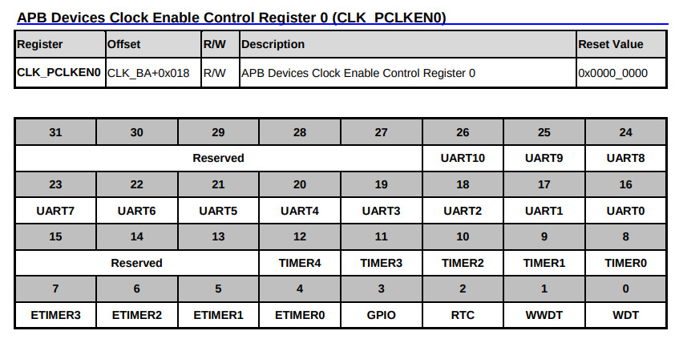
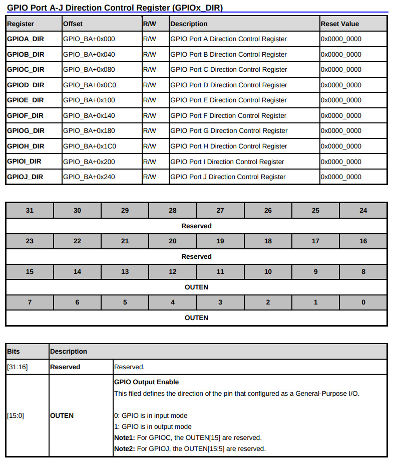
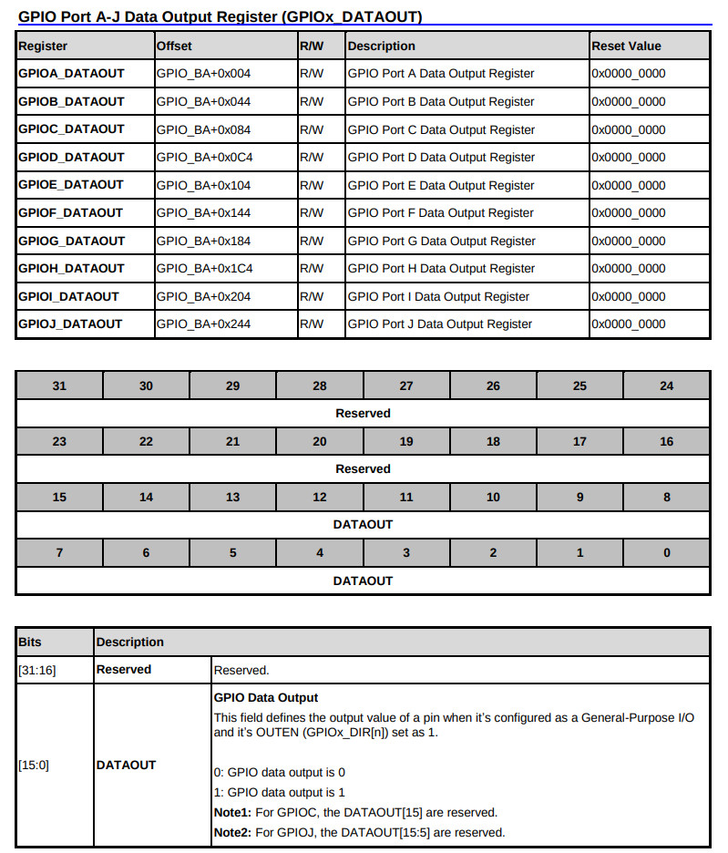

參考資訊：
https://github.com/OpenNuvoton/NUC970_NonOS_BSP
Enable GPIO Clock



.equ GPIOD_DIR, (0xb8003000 + 0xc0)
.equ GPIOD_DATAOUT, (0xb8003000 + 0xc4)
.equ CLK_PCLKEN0, (0xb0000200 + 0x18)
.text
.align 2
.global _start
_start: b reset
_undef: b .
_swi: b .
_pabort: b .
_dabort: b .
_reserved: b .
_irq: b .
_fiq: b .
reset:
ldr r0, =CLK_PCLKEN0
ldr r1, [r0]
orr r1, #(1 << 3)
str r1, [r0]
ldr r0, =GPIOD_DIR
ldr r1, =(1 << 6)
str r1, [r0]
loop:
ldr r0, =GPIOD_DATAOUT
ldr r1, =(1 << 6)
str r1, [r0]
ldr r4, =500000
1:
nop
subs r4, r4, #1
bne 1b
ldr r0, =GPIOD_DATAOUT
ldr r1, =~(1 << 6)
str r1, [r0]
ldr r4, =500000
1:
nop
subs r4, r4, #1
bne 1b
b loop
.end
main.ld
MEMORY {
RAM(rwx) : ORIGIN = 0x000000, LENGTH = 0x08000000
}
SECTIONS {
.text : {
*(.text);
} > RAM
}
Makefile
all: arm-none-eabi-as -mcpu=arm9 -o main.o main.s arm-none-eabi-ld -T main.ld -o main.elf main.o arm-none-eabi-objcopy -O binary main.elf main.bin flash: sudo nuwriter -m sdram -d NUC977DK62Y.ini -a 0 -w main.bin -n clean: rm -rf main.o main.elf main.bin
編譯、燒錄
$ make
arm-none-eabi-as -mcpu=arm9 -o main.o main.s
arm-none-eabi-ld -T main.ld -o main.elf main.o
arm-none-eabi-objcopy -O binary main.elf main.bin
$ make flash
sudo nuwriter -m sdram -d NUC977DK62Y.ini -a 0 -w main.bin -n
完成